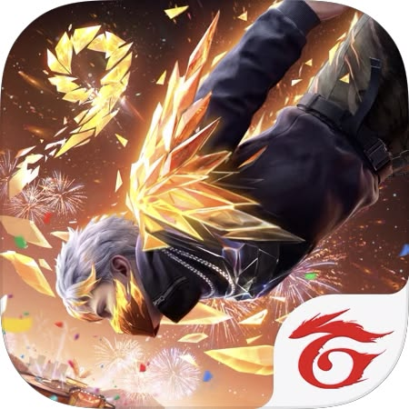
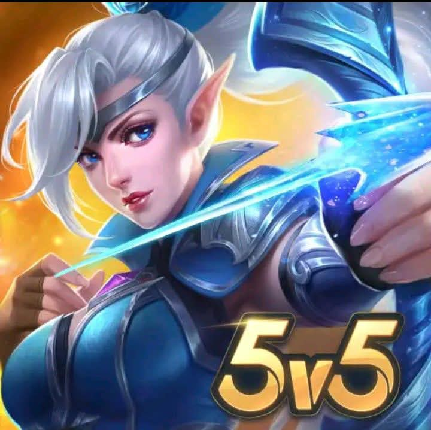
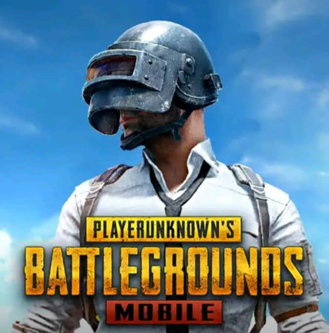
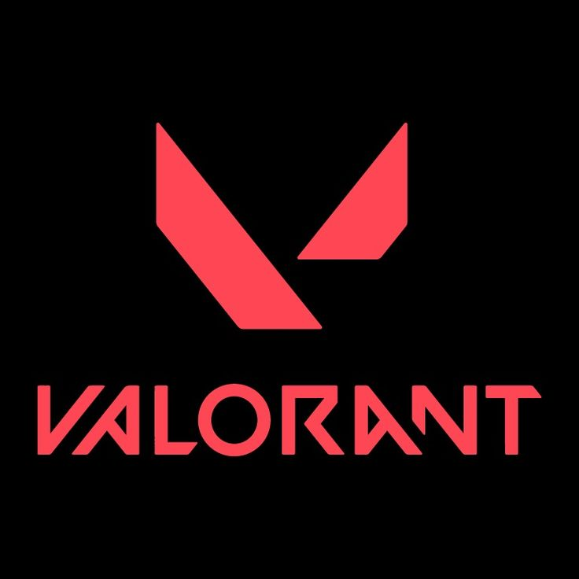
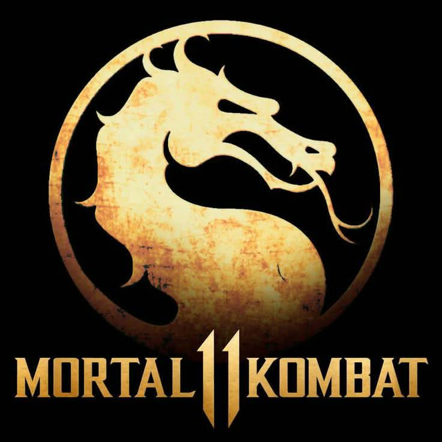

Free Fire

1. Free Fire adalah game battle royale yang dikembangkan oleh Garena.
2. Game ini dapat dimainkan melalui perangkat Android dan iOS.
3. Dalam permainan, pemain harus bertahan hidup hingga menjadi yang terakhir.
4. Setiap pertandingan biasanya diikuti oleh banyak pemain.
5. Pemain dapat menggunakan berbagai jenis senjata untuk mengalahkan musuh.
6. Free Fire memiliki banyak karakter dengan kemampuan khusus.
7. Game ini menyediakan berbagai mode permainan yang menarik.
8. Pemain dapat bermain bersama teman dalam mode duo atau squad.
9. Free Fire memiliki berbagai skin senjata, pakaian, dan kendaraan.
10. Game ini sangat populer di Indonesia karena mudah dimainkan.
Mobile Legends

1. Mobile Legends adalah game MOBA yang dikembangkan oleh Moonton.
2. Game ini dapat dimainkan melalui smartphone Android dan iOS.
3. Permainan ini mempertemukan dua tim yang masing-masing terdiri dari lima pemain.
4. Setiap pemain memilih hero dengan kemampuan yang berbeda.
5. Terdapat beberapa role hero seperti Tank, Fighter, Assassin, Mage, Marksman, dan Support.
6. Tujuan utama permainan adalah menghancurkan base utama lawan.
7. Pemain harus bekerja sama dengan tim untuk meraih kemenangan.
8. Mobile Legends memiliki berbagai mode permainan.
9. Game ini sering mengadakan turnamen esports tingkat nasional dan internasional.
10. Mobile Legends menjadi salah satu game MOBA mobile paling populer.
PUBG Mobile

1. PUBG Mobile adalah game battle royale yang dikembangkan oleh Level Infinite bersama Lightspeed Studios.
2. Game ini terinspirasi dari PUBG: Battlegrounds.
3. Pemain diterjunkan ke sebuah pulau menggunakan pesawat.
4. Pemain harus mencari senjata dan perlengkapan untuk bertahan hidup.
5. Area permainan akan semakin mengecil seiring berjalannya waktu.
6. Pemain harus mengalahkan lawan agar bisa menjadi pemenang.
7. PUBG Mobile menyediakan berbagai pilihan peta seperti Erangel dan Miramar.
8. Game ini memiliki berbagai jenis senjata, kendaraan, dan perlengkapan.
9. Pemain dapat bermain sendiri atau bersama teman dalam mode squad.
10. PUBG Mobile terkenal dengan grafis dan pengalaman bermain yang realistis.
Valorant

1. Valorant adalah game tactical shooter yang dikembangkan oleh Riot Games.
2. Game ini dimainkan melalui komputer atau PC.
3. Pertandingan mempertemukan dua tim yang masing-masing terdiri dari lima pemain.
4. Pemain menggunakan karakter yang disebut Agent.
5. Setiap Agent memiliki kemampuan khusus yang berbeda.
6. Salah satu tim bertugas memasang Spike, sedangkan tim lawan berusaha menghentikannya.
7. Game ini membutuhkan strategi, kerja sama tim, dan ketepatan menembak.
8. Terdapat berbagai jenis senjata yang dapat dibeli sebelum pertandingan dimulai.
9. Valorant memiliki banyak peta dengan desain dan strategi yang berbeda.
10. Valorant menjadi salah satu game esports populer di dunia.
Mortal Kombat

1. Mortal Kombat adalah game pertarungan yang dikembangkan oleh NetherRealm Studios.
2. Game ini pertama kali dirilis pada tahun 1992.
3. Pemain dapat memilih berbagai karakter petarung.
4. Setiap karakter memiliki jurus dan kemampuan bertarung yang berbeda.
5. Pemain harus mengalahkan lawan dalam pertandingan satu lawan satu.
6. Game ini terkenal dengan gerakan khusus yang disebut Fatality.
7. Beberapa karakter terkenalnya adalah Scorpion, Sub-Zero, dan Raiden.
8. Mortal Kombat memiliki cerita tentang pertarungan antar dunia.
9. Game ini tersedia di berbagai platform seperti PlayStation, Xbox, dan PC.
10. Mortal Kombat terkenal karena pertarungannya yang intens dan grafis yang menarik.